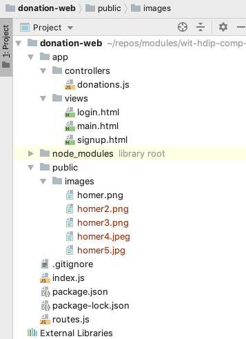
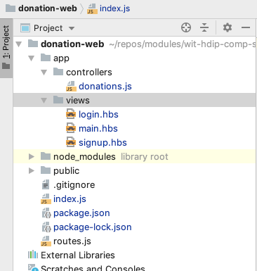
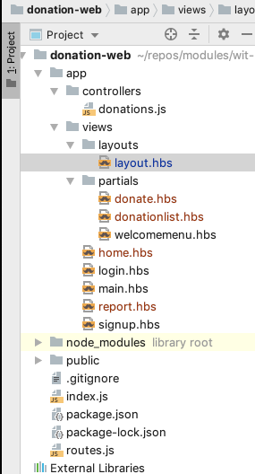

Extend the application to employ layouts, templates, and partials. Include simple interaction features to track users and donations.
Incorporate all of the assets from Lab-02b exercises step into the project:

(Note that main.html contains additional elements, so replace your version with the copy in the exercises).
Here are the revised routes & controller:
const Donations = require('./app/controllers/donations');
module.exports = [
{ method: 'GET', path: '/', config: Donations.index },
{ method: 'GET', path: '/signup', config: Donations.signup },
{ method: 'GET', path: '/login', config: Donations.login },
{
method: 'GET',
path: '/{param*}',
handler: {
directory: {
path: './public'
}
}
}
];'use strict';
const Donations = {
index: {
handler: async function(request, h) {
return h.file('./app/views/main.html');
}
},
signup: {
handler: async function(request, h) {
return h.file('./app/views/signup.html');
}
},
login: {
handler: async function(request, h) {
return h.file('./app/views/login.html');
}
}
};
module.exports = Donations;HAPI view support enables more sophisticated user interactions than simply rendering static pages.
To engage, you must install this HAPI module:
via this command:
npm install visionWe will use the handlebar engine:
This must be installed separately with another npm command:
npm install handlebarsIf successful, your package.json should look like this:
{
"name": "donation-web",
"version": "1.0.0",
"description": "",
"main": "index.js",
"scripts": {
"test": "echo \"Error: no test specified\" && exit 1"
},
"author": "",
"license": "ISC",
"dependencies": {
"handlebars": "^4.0.12",
"hapi": "^18.0.0",
"inert": "^5.1.2",
"vision": "^5.4.4"
},
"devDependencies": {
"prettier": "^1.16.0"
},
"prettier": {
"singleQuote": true,
"printWidth": 120
}
}Initialising this plugin requires registration as with inert, but also an additional step to configure these plugin. This is a revised index.js:
'use strict';
const Hapi = require('hapi');
const server = Hapi.server({
port: 3000,
host: 'localhost'
});
async function init() {
await server.register(require('inert'));
await server.register(require('vision'));
server.views({
engines: {
hbs: require('handlebars')
},
relativeTo: __dirname,
path: './app/views',
isCached: false
});
server.route(require('./routes'));
await server.start();
console.log(`Server running at: ${server.info.uri}`);
}
process.on('unhandledRejection', err => {
console.log(err);
process.exit(1);
});
init();Rename each of the view from .html to .hbs:

Currently the <title> element of each view is hard coded. Replace this element in each view with a handlebars style parameter:
<title>{{title}}</title> <title>{{title}}</title> <title>{{title}}</title>We can now refactor the controller to pass the actual title to the view when is is being rendered:
'use strict';
const Donations = {
index: {
handler: function(request, h) {
return h.view('main', { title: 'Welcome to Donations' });
}
},
signup: {
handler: function(request, h) {
return h.view('signup', { title: 'Sign up for Donations' });
}
},
login: {
handler: function(request, h) {
return h.view('login', { title: 'Login to Donations' });
}
}
};
module.exports = Donations;Test this out now. There should be no noticeable change.
A key tenet of view structure is DRY (dont repeat yourself):
Currently our views are very verbose and repetitive. We can start to address this via handlebars layouts and partials.
Layouts are part of the vision implementation:
.. and partials are implemented by the handlebars engine:
First, we need to configure the Vision plugin to use layouts and partials. Extend its initalisation as follows:
server.views({
engines: {
hbs: require('handlebars'),
},
relativeTo: __dirname,
path: './app/views',
layoutPath: './app/views/layouts',
partialsPath: './app/views/partials',
layout: true,
isCached: false,
});We can now set up a layout to be used by most of our views. Create the layout in a layouts folder in views:
<!DOCTYPE html>
<html>
<head>
<title>{{title}}</title>
<meta charset="UTF-8">
<script type="text/javascript" src="//cdnjs.cloudflare.com/ajax/libs/jquery/2.1.1/jquery.min.js"></script>
<script type="text/javascript" src="//cdnjs.cloudflare.com/ajax/libs/semantic-ui/2.4.1/semantic.min.js"></script>
<link rel="stylesheet" media="screen" href="//cdnjs.cloudflare.com/ajax/libs/semantic-ui/2.4.1/semantic.min.css" />
</head>
<body>
<section class="ui container">
{{{content}}}
</section>
</body>
</html>This will be the base view for our other views.
We can also create a reusable partial that we can include explicitly in other views. Create this in partials folder in views:
<nav class="ui inverted menu">
<header class="header item"> <a href="/"> Donation </a> </header>
<div class="right menu">
<a class="item" href="/signup"> Signup</a>
<a class="item" href="/login"> Login</a>
</div>
</nav>We can now adapt all of the views to use these artifacts:
{{> welcomemenu }}
<section class="ui stacked segment">
<div class="ui grid">
<aside class="six wide column">
<img src="images/homer.png" class="ui medium image">
</aside>
<article class="ten wide column">
<header class="ui header"> Help Me Run Springfield</header>
<p> Donate what you can now - No Bitcoins accepted! </p>
</article>
</div>
</section>{{> welcomemenu }}
<section class="ui raised segment">
<div class="ui grid">
<div class="ui ten wide column">
<div class="ui stacked fluid form segment">
<form action="/signup" method="POST">
<h3 class="ui header">Register</h3>
<div class="two fields">
<div class="field">
<label>First Name</label>
<input placeholder="First Name" type="text" name="firstName">
</div>
<div class="field">
<label>Last Name</label>
<input placeholder="Last Name" type="text" name="lastName">
</div>
</div>
<div class="field">
<label>Email</label>
<input placeholder="Email" type="text" name="email">
</div>
<div class="field">
<label>Password</label>
<input type="password" name="password">
</div>
<button class="ui blue submit button">Submit</button>
</form>
</div>
</div>
<aside class="ui five wide column">
<img src="images/homer3.png" class="ui medium image">
</aside>
</div>
</section>{{> welcomemenu }}
<section class="ui raised segment">
<div class="ui grid">
<aside class="ui six wide column">
<img src="images/homer2.png" class="ui medium image">
</aside>
<div class="ui ten wide column fluid form">
<div class="ui stacked segment">
<form action="/login" method="POST">
<h3 class="ui header">Log-in</h3>
<div class="field">
<label>Email</label> <input placeholder="Email" type="text"
name="email">
</div>
<div class="field">
<label>Password</label> <input type="password" name="password">
</div>
<button class="ui blue submit button">Login</button>
</form>
</div>
</div>
</div>
</section>With this infrastructure in place, we can incorporate the remaining views for our application. This will involve additional partials + views structured as follows in the project:

<section class="ui raised segment">
<div class="ui grid ">
<div class="ui form six wide column">
<div class="ui stacked segment">
<form action="/donate" method="POST">
<div class="ui dropdown" name="amount">
<input type="hidden" name="amount">
<div class="text">Select Amount</div>
<i class="ui dropdown icon"></i>
<div class="menu">
<div class="item">50</div>
<div class="item">100</div>
<div class="item">1000</div>
</div>
</div>
<div class="grouped inline fields">
<div class="field">
<div class="ui radio checkbox">
<input type="radio" name="method" value="paypal">
<label>Paypal</label>
</div>
</div>
<div class="field">
<div class="ui radio checkbox">
<input type="radio" name="method" value="direct">
<label>Direct</label>
</div>
</div>
</div>
<button class="ui blue submit button">Donate</button>
</form>
</div>
</div>
<aside class="six wide column">
<img src="images/homer4.jpeg" class="ui medium image">
</aside>
</div>
</section><section class="ui raised segment">
<div class="ui grid">
<aside class="six wide column">
<img src="images/homer5.jpg" class="ui medium image">
</aside>
<article class="eight wide column">
<table class="ui celled table segment">
<thead>
<tr>
<th>Amount</th>
<th>Method donated</th>
</tr>
</thead>
<tbody>
{{#each donations}}
<tr>
<td> {{amount}} </td>
<td> {{method}} </td>
</tr>
{{/each}}
</tbody>
</table>
</article>
</div>
</section><nav class="ui inverted menu">
<header class="header item"><a href="/"> Donation </a></header>
<div class="right menu">
<a class="active item" href="/home"> Donate</a>
<a class="item" href="/report"> Report</a>
<a class="item" href="/logout"> Logout</a>
</div>
</nav>
<section class="ui raised segment">
{{> donate }}
<div class="ui divider"></div>
<div class="ui teal progress" data-percent="${progress}" id="mainprogress">
<div class="bar"></div>
</div>
</section><nav class="ui inverted menu">
<header class="header item"> <a href="/"> Donation </a> </header>
<div class="right menu">
<a class="item" href="/home"> Donate</a>
<a class="active item" href="/report"> Report</a>
<a class="item" href="/logout"> Logout</a>
</div>
</nav>
{{> donationlist }}We also make this adjustment to the layout (to support dropdown controls)
<!DOCTYPE html>
<html>
<head>
<title>{{title}}</title>
<meta charset="UTF-8">
<script type="text/javascript" src="//cdnjs.cloudflare.com/ajax/libs/jquery/2.1.1/jquery.min.js"></script>
<script type="text/javascript" src="//cdnjs.cloudflare.com/ajax/libs/semantic-ui/2.4.1/semantic.min.js"></script>
<link rel="stylesheet" media="screen" href="//cdnjs.cloudflare.com/ajax/libs/semantic-ui/2.4.1/semantic.min.css" />
</head>
<body>
<section class="ui container">
{{{content}}}
</section>
<script>
$(document).ready(function () {
$('.ui.dropdown').dropdown({ on: 'hover' });
});
</script>
</body>
</html>We will rework the controllers, creating an new Accounts controller to handle user accounts, login etc...:
'use strict';
const Accounts = {
index: {
handler: function(request, h) {
return h.view('main', { title: 'Welcome to Donations' });
}
},
showSignup: {
handler: function(request, h) {
return h.view('signup', { title: 'Sign up for Donations' });
}
},
signup: {
handler: function(request, h) {
return h.redirect('/home');
}
},
showLogin: {
handler: function(request, h) {
return h.view('login', { title: 'Login to Donations' });
}
},
login: {
handler: function(request, h) {
return h.redirect('/home');
}
},
logout: {
handler: function(request, h) {
return h.redirect('/');
}
}
};
module.exports = Accounts;We can then refactor the donations controller to support making and listing donations:
'use strict';
const Donations = {
home: {
handler: function(request, h) {
return h.view('home', { title: 'Make a Donation' });
}
},
report: {
handler: function(request, h) {
return h.view('report', { title: 'Donations so far' });
}
}
};
module.exports = Donations;This is the revised routes that serves these controllers:
'use strict';
const Accounts = require('./app/controllers/accounts');
const Donations = require('./app/controllers/donations');
module.exports = [
{ method: 'GET', path: '/', config: Accounts.index },
{ method: 'GET', path: '/signup', config: Accounts.showSignup },
{ method: 'GET', path: '/login', config: Accounts.showLogin },
{ method: 'GET', path: '/logout', config: Accounts.logout },
{ method: 'POST', path: '/signup', config: Accounts.signup },
{ method: 'POST', path: '/login', config: Accounts.login },
{ method: 'GET', path: '/home', config: Donations.home },
{ method: 'GET', path: '/report', config: Donations.report },
{
method: 'GET',
path: '/{param*}',
handler: {
directory: {
path: './public'
}
}
}
];You should be able to navigate through login to the home screen now. However, if you make a donation you will get an error.
We can try to store some of the donations the user makes in an simple array. In index.js, include the following just before the init function is defined:
server.bind({
donations: [],
});Introduce this additional route, which is a POST route to accept donations:
...
{ method: 'POST', path: '/donate', config: Donations.donate },
...We can now refactor the donations controller to store and retrieve these donations:
'use strict';
const Donations = {
home: {
handler: function(request, h) {
return h.view('home', { title: 'Make a Donation' });
}
},
report: {
handler: function(request, h) {
return h.view('report', {
title: 'Donations to Date',
donations: this.donations
});
}
},
donate: {
handler: function(request, h) {
const data = request.payload;
this.donations.push(data);
return h.redirect('/report');
}
}
};
module.exports = Donations;Rerun the app again - this time, if you proceed through login, you should be able to make donations, and see them on the report view.
Archive of the project so far:
As well as storing the donations in the server bound objects:
server.bind({
donations: [],
});Try also storing a list of users - in a similar manner to to the donations:
server.bind({
users: [],
donations: [],
});Using the donations controller as a guide, see if you can populate this array with new users as they are registered. We already. have the route in place:
{ method: 'POST', path: '/signup', config: Accounts.signup },and a matching handler - which you will have to enhance.
signup: {
handler: function(request, h) {
return h.redirect('/home');
}
},Try also to keep track of the current user:
server.bind({
currentUser : {},
users: [],
donations: [],
});Adjust your login controller to update this field.
On the report - include an extra column - donor - which should list the name of the donor (the user who is currently logged in).